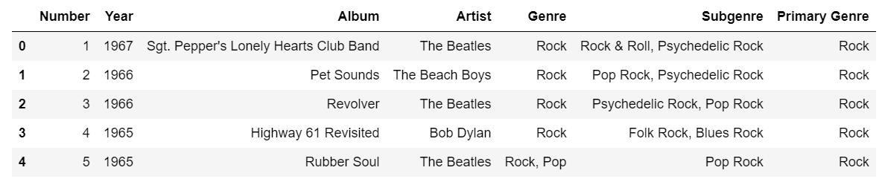
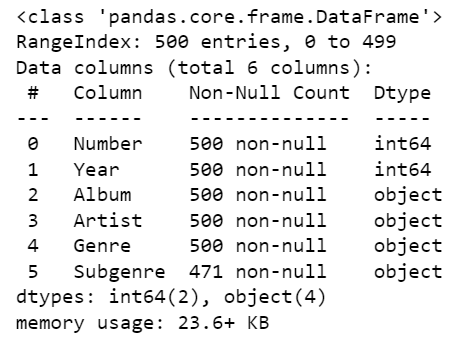

Music finds itself at the center of cultures worldwide, serving as a universal language that can transcend boundaries. It has the unique ability to evoke powerful emotions in those who engage with it.
Musical emotions can range from melancholy Radiohead's 'Karma Police', or Deftones's 'Change (In the House of Flies)', to rage from listening to Metallica's 'Master of Puppets' or Playboi Carti's 'Stop Breathing', music will always find a way to connect with the listener.
Yet, you wouldn't understand that feeling if you've never connected with the world of music. I know I couldn't just a few years ago, but with insight from reputable music publications, I was able to determine an entry point into the world of music, not only for me, but for others too.
What are the most popular music genres and time period according to the Rolling Stones top 500 albums list?
How could this help people find new music to listen to?
I used the list of top 500 albums from the Rolling Stones which included the year the album released, the name of the album, the artist, and the genres and subgenres of the album.
When using .head() function in Pandas:

When using .info() function in Pandas:

The most common music genre across the 500 albums was rock music.
This tells me that rock music is the most popular genre of music according to the Rolling Stones. This also gives people who are looking to listen to new music a genre they can begin exploring.
The most common ten year time period the albums were released was between 1970-1980.
The most popular music according to the Rolling Stones was released between 1970-1980. For people looking to listen to new music, this can narrow their search for new music to stuff that was released during the 70s.
Click on a bar to see what some of the albums are!
The most popular music according to the Rolling Stones top 500 is Rock music, and the ten year time period where the most popular music was released was between 1970 and 1980. This could help people find new music because this information gives people a starting place from which to begin exploring new music. I know this because the category in the bar chart I created for each album’s most prevalent genre was rock. In the histogram I created to see the time period where each of the albums were released, the bars were the highest between 1970-1980 along with the best fit line.